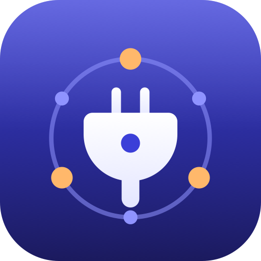

Claude 플러그인,
한곳에서 찾고 정리하세요
Claude Code와 Claude 앱의 플러그인을 검색하고, 설치하고, 켜고 끄고, 안 쓰는 것을 정리하는 무료 데스크톱 앱입니다.
다운로드 macOS · Windows무료 · 오픈소스(MIT)

무엇을 할 수 있나요
플러그인이 늘어날수록 무엇이 켜져 있는지, 무엇을 쓰는지 알기 어려워집니다.
찾기와 설치
공식 디렉터리 3,700여 개 플러그인을 하고 싶은 일로 검색하고, 분야별 인기 플러그인을 한국어 설명과 함께 봅니다.
사용처 구분
Claude Code(터미널, Claude 앱 Code 탭)와 Claude 채팅(채팅, Cowork) 플러그인을 나눠 보여 줍니다.
켜고 끄기, 폴더별 적용
플러그인을 바로 켜고 끄고, 작업 폴더마다 다르게 적용합니다. 설정 파일은 고치기 전에 자동 백업합니다.
안 쓰는 플러그인 정리
켜진 플러그인이 매 세션 차지하는 컨텍스트를 보여 주고, 최근 30일 동안 쓰지 않은 플러그인을 알려 줍니다(동의한 경우).
명령어 모음
플러그인별 슬래시 명령과 쓰는 법을 한국어로 보고, 버튼 하나로 Claude 앱 채팅에 입력합니다.
설정 점검과 자동 업데이트
설정 찌꺼기, 이름 충돌 같은 문제를 14개 규칙으로 감지하고, 앱과 플러그인을 자동으로 최신 상태로 유지합니다.
다운로드
설치 후에는 앱이 스스로 새 버전을 받아 업데이트합니다. 다시 내려받을 필요가 없습니다.
macOS
Apple Silicon · Intel 공용 · macOS 11 이상
Mac용 다운로드 (.dmg)
- dmg를 열고 Plugin Hub를 응용 프로그램 폴더로 끌어 옵니다.
- 처음 열 때 "확인할 수 없습니다" 창이 뜨면 완료를 누릅니다.
- 시스템 설정 > 개인정보 보호 및 보안에서 그래도 열기를 누릅니다. 이후에는 바로 열립니다.
Windows
Windows 10 이상 · 64비트 · 관리자 권한 불필요
Windows용 다운로드 (.exe)
- 설치 파일을 실행합니다.
- "Windows의 PC 보호" 창이 뜨면 추가 정보를 누른 뒤 실행을 누릅니다.
- 설치가 끝나면 Plugin Hub가 열립니다.
처음 열 때 경고가 뜨는 이유 — 아직 유료 코드 서명 인증서를 쓰지 않아 운영체제가 처음 한 번 확인을 요청합니다. 앱은 공개된 소스 코드로 GitHub에서 자동 빌드되며, 앱 업데이트는 개발자 서명을 확인한 뒤에만 설치됩니다.
함께 필요한 것: Claude 앱 또는 터미널용 Claude Code 중 하나. Claude 앱에는 Claude Code가 들어 있습니다.
개인정보와 보안
이 PC 안에서만 동작합니다
- 개발자 서버가 없고, 사용 통계·광고·추적을 수집하지 않습니다.
- 처음 실행할 때 무엇을 읽고 언제 인터넷에 연결하는지 보여 주고 동의를 받습니다. 동의 전에는 아무것도 읽거나 보내지 않습니다.
- 대화 기록을 읽는 사용 분석은 선택이며 기본으로 꺼져 있습니다.
안전하게 만들었습니다
- 외부 플러그인 파일은 신뢰하지 않는 입력으로 다루고, 명령은 셸을 거치지 않고 실행합니다.
- 독립 보안 검토와 자동 보안 스캔을 거쳤고, 모든 업데이트는 서명을 확인합니다.
- 소스 코드가 모두 공개되어 있습니다.